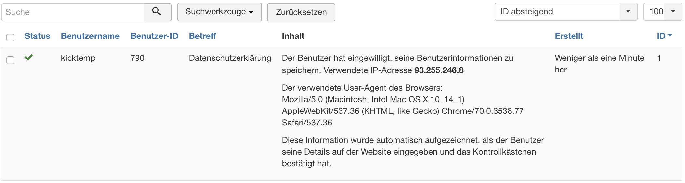

Modul: Alle Anfragen
Zeigt eingegangene Anfragen von Benutzern an.

Modul: Alle Anfragen
Unterscheidung zwischen Anfragen um gespeicherte personenbezogene Benutzerdaten zu löschen
bzw. diese per Export anzufordern.
Menüpunkt vom Menüeintragstyp:


DSGVO und so...

Anfrager muss die E-Mail Adresse, welche die Anfrage gestellt hat eintragen.


Zwei Möglichkeiten: Daten direkt herunterladen als XML oder Datenexport per E-Mail (XML-Anhang) senden.

-
790
Stefan Wendhausen
kicktemp
sw@tec-promotion.de
0
0
2018-11-09 21:18:16
0000-00-00 00:00:00
{"admin_style":"","admin_language":"","language":"","editor":"","helpsite":"","timezone":""}
0000-00-00 00:00:00
0
0
Speichert alle Benutzerzustimmungen
Modul: Statusprüfung

Modul: Statusprüfung

Datenschutzerklärung verknüpfen mit Beitrag

Modul: Statusprüfung


Umleitung auf "Profil bearbeiten" bis Benutzer der Datenschutzerklärung zustimmt.

Ablauf konfigurierbar